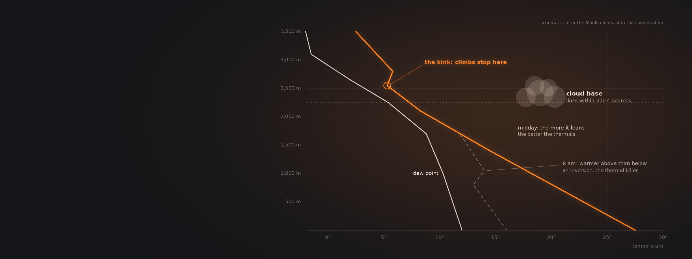
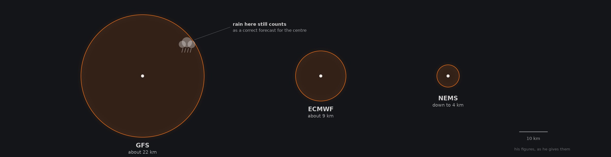
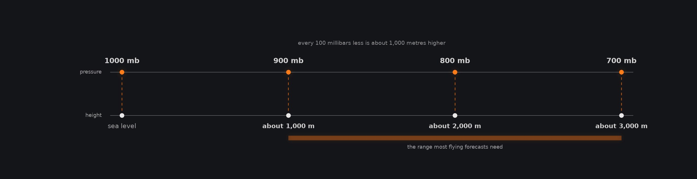
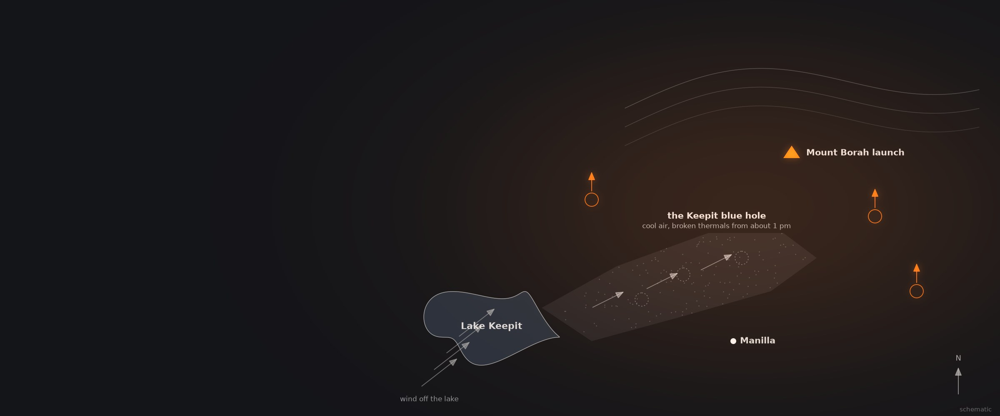

How Do You Read a Weather Forecast for Paragliding?
A club weather briefer walks through a real forecast: why the apps disagree, how far ahead to trust them, reading wind at the height you fly, finding the thermal tops and cloud base on a sounding, and the local effects no model can see.
One conversation, with Ivelin Kalushkov of the Sky Nomad club in central Bulgaria, who has run morning weather briefings for pilots for about fifteen years, built around a live forecast for Manilla in Australia.
The one conversations
Open any tile for chapters, quotes and links
Why every app shows a different forecast
Weather models are built by different agencies for different jobs, and each reads the same data its own way. Ivelin Kalushkov compares them side by side, trusts no forecast beyond three days, and knows when his model updates.
Ivelin Kalushkov has been building morning weather briefings for his club, Sky Nomad in central Bulgaria, for about 15 years. At first that meant combining around ten websites, one good on wind and another on rain; today much of it is automated, and a pilot can make a detailed forecast from one or two sites. For almost anywhere in Europe there are more than 15 models, he says. Agencies build them for different jobs, some to forecast rain for farming, others wind for aviation, some global and some regional, and each calculates differently, so each reads the same data a little differently. There is no universal model, though some average the others. Resolution matters too: the forecast for a point covers the area around it, and if rain falls anywhere inside, the model counts itself right. In his figures GFS covers about 22 kilometres, ECMWF about 9 and Meteoblue's NEMS down to 4, and for the local effects pilots care about, finer is better.
Time matters most. No forecast is accurate beyond about 72 hours, he says, because model errors grow exponentially; in the changeable seasons, spring and autumn, a forecast can be wrong after 12 or 24 hours, while in a settled summer it may hold longer. Know when your model recalculates, because an update can change the longer range completely. He starts with Meteoblue's multimodel view, which shows every model available for a place, about ten around Manilla in Australia and many more in Europe, with their average as a dotted line that is usually the most accurate. Dismiss models far from the rest, and over a few days or weeks watch which ones match what actually happens, then lean on those. The only service he pays for is SkySight, built for gliding; the average pilot, he says, can manage without paid services.

After Ivelin Kalushkov, Episode 42, chapter 4. Resolutions as he gives them.
Wind at the height you will fly
Ground wind is only the start. Forecasts give the wind aloft by pressure rather than height, so learn the millibar rule, read the wind barbs, and look for changes with height that mean shear.
Start with the wind, Ivelin Kalushkov says, because it tells you whether a day is flyable at all; then look at the sky and at the air. Check the wind not only at ground level but at the height you expect to fly: on a normal day at Manilla you can reach 3,000 metres, so he looks at around 2,000. Forecasts give wind at a pressure rather than a height, because weather balloons report it that way, and his rule of thumb is simple: 1,000 millibars at sea level, then about 1,000 metres for every 100 millibars less, so 900 is about 1,000 metres, 800 about 2,000 and 700 about 3,000. Most flying forecasts need only 900 to 700. If the wind aloft strengthens during the day, expect it to reach the lower layers too, and a strong crosswind early in the day can push a cross-country flight off its route into worse terrain.
For the wind at every height through the day he reads a windgram. On a wind barb the stick shows where the wind comes from; each short barb is about five knots and a long one ten, no barb means under five, and doubling the knots gives a rough figure in kilometres per hour. A layer where the direction or speed changes sharply is wind shear, which usually means turbulence, and thermals that are broken and harder to follow. In his Manilla example the wind stayed uniform up to 3,000 metres but was forecast to gust to 30 km/h late in the afternoon, so his advice was to be in the air before 3 pm. SkySight also gives the average wind through the whole thermal layer, about 12 km/h that day: one number that saves reading every level.

After Ivelin Kalushkov, Episode 42, chapters 7 and 8.
Reading a sounding without the jargon
Ivelin Kalushkov reads a sounding with two lines: how the temperature changes with height, and how close the dew point comes to it. The first tells you how high the thermals will go, the second where the clouds will be.
On a sounding the temperature line is the one to read first. The more it leans over with height, the better the gradient and the faster a thermal will rise; if it stands straight up, a thermal gains nothing on the air around it; if it leans the other way, that is an inversion, which he calls a thermal killer. Early mornings usually show one, because cold air sinks into the valley overnight: in his Manilla example it was 16 degrees at the ground and 13 at 800 metres, then warmer again above, so a thermal would have needed to be hotter than 23 degrees to break through. Step the forecast through the morning and you can watch it go. At 10 o'clock an inversion still sat at about 1,200 metres, flyable below but capping the climbs; at 11 climbs reached about 1,600; by noon it had gone. How high thermals go depends on where the line kinks, since even a small change stops them, and at 2 pm that was about 2,500 to 2,600 metres.
The dew point line tells you about cloud. Condensation starts where the dew point comes within about three or four degrees of the air temperature: at 1,400 metres that day the air was 16.5 degrees and the dew point 9.3, far apart, but they closed in higher up, giving the first wisps around 2,000 metres and a cloud base of about 2,200 to 2,300. If the two lines never get that close, expect a blue day. If they run together over a great height, clouds can grow high enough for thunderstorms or rain, as on a warm front; a dew point that swings sharply away marks a very dry layer, which stops clouds overdeveloping. Repeat the reading along your route: at Manilla the cloud base rose further north, to about 2,600 metres.

The forecast can promise a perfect day at Manilla. But when the wind comes off Lake Keepit, the lake pours cold air into the valley in front of launch from about one o'clock, and the thermals break up. Every local will tell you: be in the air before the blue hole sets in.
Ivelin Kalushkov Episode 42, paraphrased
Lake Keepit, southwest of Manilla: a local effect that none of the models predict.
What the models cannot see
No model knows that Lake Keepit kills the thermals in front of Manilla's launch after lunch, or that a south-facing Bulgarian site flies best in a northerly. Local knowledge still wins, and live data helps you check the forecast against the sky.
Ivelin Kalushkov's Manilla forecast looked excellent: south to southwesterly winds, cloud base around 2,500 metres, a proper start after about 10 o'clock and a potential flight distance of about 200 kilometres. But he knows something none of the models calculate. When the wind blows off Lake Keepit, southwest of town, the lake spills cold air into the valley in front of the launch from about one o'clock and breaks up the thermals; local pilots call it the Keepit blue hole, and tell you to be in the air before it sets in. At his home site, Sopot, on the south side of a mountain, many experienced pilots see a northerly in the forecast and write the day off, yet strong daytime anabatic winds can overcome it and give very good flying. So research a site before you go and use local knowledge where it exists; where it does not, look at the terrain, imagine how the air will flow, and take it cautiously. In competitions, he thinks, locals who know these effects have a real edge.
Live data is the other check. Windy's rain radar is close to live, he says, and he watches it when guiding or flying to see where showers are moving; some flight apps can now overlay a forecast on screen, so you can fly towards a forecast convergence line. SkySight's convergence map shows where winds meet and push air up, giving up to about a metre per second of extra lift without a thermal, often with stacked clouds or cloud streets; plan a route through them and away from the divergence areas, which bring strong sink and broken thermals. And keep learning. Flying since 2007, he is still surprised by the weather; the way to get better is to make your own forecast, compare it with what happens, and read beyond paragliding, including what sailplane pilots have learned. Visitors are welcome at Sky Nomad's morning briefings in Sopot.
Worth remembering
Each one links to the chapter where it is saidWhat the colours mean for pilots
On a live rain radar, Ivelin Kalushkov would often dismiss faint blue as drizzle. Green or above means a cloud that has grown heavy, and if thunderstorms are forecast, expect rain and possible gust fronts with anything over green. What it means depends on the day: rain from the layer cloud of a warm front may just mean bad weather, while a cold front can bring overdevelopment and storms.
Ivelin Kalushkov What to look at in a chartChoosing a forecast
Three days is the limit
Beyond about 72 hours a forecast is a guess; in spring and autumn, trust it for 12 to 24 hours.
Ivelin Kalushkov Which is best long term, which shortKnow when your model updates
One recalculation can change the longer-range picture completely.
Ivelin Kalushkov Which is best long term, which shortFind the model that fits your area
Compare the models with what happens for a few days or weeks, then lean on the best.
Ivelin Kalushkov Reading weather from a distanceReading it
Count millibars in thousands of metres
900 is about 1,000 m, 800 about 2,000 and 700 about 3,000.
Ivelin Kalushkov What to look at in a chartLook for the kink
Thermals stop where the temperature line bends, and an inversion stops them early.
Ivelin Kalushkov Inversions, and the 23 degree questionCloud base is where the lines meet
Expect cloud where the dew point comes within three or four degrees of the air temperature.
Ivelin Kalushkov Inversions, and the 23 degree questionOn the day
Check the wind where you will fly
Look at around 2,000 m as well as the ground, and at how it changes through the day.
Ivelin Kalushkov What to look at in a chartWatch the live radar
Windy's rain radar is close to live and shows which way showers are moving.
Ivelin Kalushkov Reading weather from a distanceAsk the locals
Forecasts miss local effects such as Manilla's Keepit blue hole.
Ivelin Kalushkov Reading the colour mappingQuestions this conversation answers
Each answer links to the chapter of the episode where the guest says it.
Why does Windy show several different weather models?
Because no single model is best at everything, says Ivelin Kalushkov. Different agencies build models for different jobs, some to forecast rain for farming, others wind for aviation, some global and some regional, and each calculates the same data in its own way. For most places in Europe more than 15 models exist, and apps show only a few of them. Some models average the others.
Ivelin Kalushkov Why five forecast models on one appWhich weather model is best for paragliding?
There is no universal model, but Ivelin Kalushkov has his habits. He starts with Meteoblue's multimodel view to see how far the models agree, uses its NEMS model for wind and ICON for cloud and rain, then turns to SkySight, built for gliding, for the sounding, thermal strength, cloud cover, convergence lines, rain, cloud base and the potential flight distance for the day.
Ivelin Kalushkov Where local knowledge still winsHow far ahead can you trust a weather forecast for flying?
About three days at most, says Ivelin Kalushkov. Model errors grow exponentially with time, so in his aviation experience anything beyond 72 hours is a wild guess. In spring and autumn, when the weather is more dynamic, a forecast can be wrong after 12 or 24 hours; in a settled summer it may hold longer. Check when your model updates, because a recalculation can change everything.
Ivelin Kalushkov Which is best long term, which shortIs it worth paying for a paragliding weather service?
Not necessarily. Ivelin Kalushkov thinks the average pilot can manage without paid services, and on a tight budget entirely with free ones. The only one he pays for is SkySight, because it focuses on flying weather such as thermals and convergence, and he has found it very accurate in some respects, sometimes placing rain within a kilometre or two. He uses Windy mainly for its live radar.
Ivelin Kalushkov Which is best long term, which shortWhat does resolution mean in a weather model?
It is the area each forecast point covers, as Ivelin Kalushkov explains it. If a model with a 22 kilometre resolution forecasts rain in central London and it rains anywhere within 22 kilometres, the model counts itself right. Pilots care about local effects, so finer is better. His figures: GFS about 22 kilometres, ECMWF about 9, and Meteoblue's NEMS down to 4.
Ivelin Kalushkov Who runs these modelsHow do you convert millibars to altitude?
Use Ivelin Kalushkov's rule of thumb: 1,000 millibars at sea level, then about 1,000 metres higher for every 100 millibars less. So 900 millibars is about 1,000 metres, 800 about 2,000 and 700 about 3,000, the range most flying forecasts need. Forecasts give the wind at a pressure rather than a height because weather balloons report their data that way.
Ivelin Kalushkov What to look at in a chartHow do you read wind barbs on a weather chart?
The stick shows where the wind comes from, and the barbs show its strength in knots, says Ivelin Kalushkov. One short barb is about five knots, a long one ten, a long and a short fifteen, and no barb means less than five. For a rough figure in kilometres per hour, double the knots: five knots is about ten kilometres per hour.
Ivelin Kalushkov Millibars, and a thousand metresHow do you spot an inversion on a sounding?
Look for the temperature line leaning the wrong way, so the air gets warmer with height. Ivelin Kalushkov calls inversions thermal killers. They are normal early in the day, because cold air sinks into valleys overnight. Step the forecast through the morning and watch it shrink: at Manilla one still capped the climbs at about 1,200 metres at 10 o'clock and had gone by noon.
Ivelin Kalushkov Inversions, and the 23 degree questionHow do you find cloud base from a sounding?
Find where the dew point line comes within about three or four degrees of the temperature line, says Ivelin Kalushkov; that is where condensation starts. In his Manilla example the first wisps were expected around 2,000 metres and cloud base at about 2,200 to 2,300. If the lines never come that close it will be a blue day; if they run together very high, expect storms or rain.
Ivelin Kalushkov Inversions, and the 23 degree questionWhat is a convergence line in paragliding?
A line where two winds meet and push air upwards, says Ivelin Kalushkov. On SkySight's map it can add up to about a metre per second of lift without any thermal, and for paragliders it usually means stacked clouds or cloud streets and easier climbs along the line. Darker areas are divergence, where the air moves apart: expect strong sink and broken thermals there.
Ivelin Kalushkov Reading the colour mapping